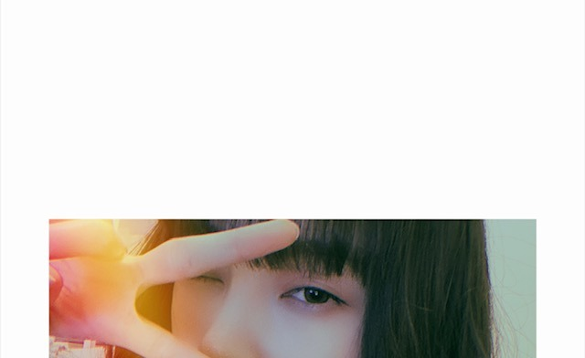
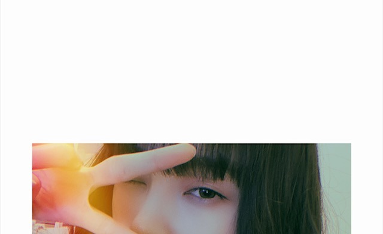

2020/0524Sunめ
今日は目の写真をたくさん載せます
アーモンドアイといいますか、
目が印象的だとよく言われるので
チャームポイントの1つでもあります
 
写真集発売まであと3日です ひ〜
Instagramの投稿は乃木坂に詳しくない
女性にも楽しんでもらえるように
工夫してきました☺︎
THE写真集アカウントはTwitterにあるので
違いを出したくて...
発売までもうすぐですが
インスタやTwitterはみなさん
楽しんでいただけましたか？
今日も明日もたくさん投稿します！ね！

猫目なのかな
チワワっぽい目ともいわれるし
（´-`）
赤ちゃんライオン飼いたい
（´-`）
質問また募集してるので
お送りください！
では
2020/05/24 14:42
コメント(419)
堀ちゃん、ブログ更新ありがとう〜
今日、堀工事中 予約したよー
写真集、堀工事中と
こんな時期だけど、楽しみいっぱいで嬉しいよー
堀ちゃん、大好きだよー
今日、堀工事中 予約したよー
写真集、堀工事中と
こんな時期だけど、楽しみいっぱいで嬉しいよー
堀ちゃん、大好きだよー
トルティーヤ君今回出てくれますか?
未央奈ちゃんの力で出演交渉して欲しいです
未央奈ちゃんの力で出演交渉して欲しいです
未央奈ブログ更新ありがとう〜♡
目大きくて羨ましい〜‼︎
質問‼︎
◎語学の勉強方法と、使ってるテキストとか合ったら教えて欲しい‼︎
◎最近1週間のプレイリスト‼︎
◎虹プロジェクト見てる〜⁇推しとかいたら教えてほしい‼︎
미오나 사랑해요 ♡
目大きくて羨ましい〜‼︎
質問‼︎
◎語学の勉強方法と、使ってるテキストとか合ったら教えて欲しい‼︎
◎最近1週間のプレイリスト‼︎
◎虹プロジェクト見てる〜⁇推しとかいたら教えてほしい‼︎
미오나 사랑해요 ♡
乃木坂46のライブの映像を見ています 年齢に関係なく男女に関係なく 笑顔で見ているファンの人達
世の中に中々無いですよ 人を笑顔にする仕事
早くライブをして人達を笑顔にして欲しいですね
世の中に中々無いですよ 人を笑顔にする仕事
早くライブをして人達を笑顔にして欲しいですね
インスタもTwitterも見てるー！楽しみにしてる
未央ちゃんブログ更新有り難うございます。
目、いいじゃないですか！
目、いいじゃないですか！
いつでも美しいや
写真集楽しみすぎます〜
質問かーーー
大好きです！！！
あ、質問になってないわ笑笑
写真集楽しみすぎます〜
質問かーーー
大好きです！！！
あ、質問になってないわ笑笑
未央奈さんブログ更新ありがとうございます
マジで写真集楽しみ
マジで写真集楽しみ
赤ちゃんライオン私も飼いたい
ピカチュウ飼いたい...
ピカチュウ飼いたい...
未央奈さん、ブログありがとう！
インスタとツィーター、いつもチェックしてます。いつもキレイでエレガント。今日のブログの写真もいいね！未央奈さん、目が印象的なので、それがよく現れていると思います。色んな未央奈さんが見られて楽しい。
写真集発売までカウントダウンしてます。
インスタとツィーター、いつもチェックしてます。いつもキレイでエレガント。今日のブログの写真もいいね！未央奈さん、目が印象的なので、それがよく現れていると思います。色んな未央奈さんが見られて楽しい。
写真集発売までカウントダウンしてます。
何でも赤ちゃんは可愛いよね。
たまにふてぶてしいのもいるけど、以外と人間だけかもね。
とら、猿、犬、猫、動物は全般的に可愛いとおもうよ。
未央奈は24になる歳だけど、めっちゃ可愛いね。
時折、めちゃくちゃ綺麗にもなるけど。
ではは
たまにふてぶてしいのもいるけど、以外と人間だけかもね。
とら、猿、犬、猫、動物は全般的に可愛いとおもうよ。
未央奈は24になる歳だけど、めっちゃ可愛いね。
時折、めちゃくちゃ綺麗にもなるけど。
ではは
ブログ更新ありがとうございます！
写真集まであと２日！絶対に買います！
苦手な食べ物はなんですか？
写真集まであと２日！絶対に買います！
苦手な食べ物はなんですか？
ブログ更新ありがとう！写真集予約しました！
スキンケアは何使ってますか？
スキンケアは何使ってますか？
質問です！
今、食べたいご飯は何ですか？
今、食べたいご飯は何ですか？
更新ありがとう〜
写真集すごくたのしみ
絶対買います！
写真集すごくたのしみ
絶対買います！
未央奈さん、こんにちは
笑うと可愛いし
真剣になると目力あるし
とてもインパクトあります
お家でファッションショー
みたいなのやって欲しいな～
これって質問ではないですよねf(^_^)
いつも更新ありがとう
笑うと可愛いし
真剣になると目力あるし
とてもインパクトあります
お家でファッションショー
みたいなのやって欲しいな～
これって質問ではないですよねf(^_^)
いつも更新ありがとう
ブログ更新ありがとうございます。
未央奈さんの目は大きくて吸い込まれそうな感じがして好きです！
そして今日はのぎたびShowroom楽しみにしてます！
質問は、私は人見知りをしてしまうんですけど、初めて会う人とかと話すときのコツとかありますか？
未央奈さんの目は大きくて吸い込まれそうな感じがして好きです！
そして今日はのぎたびShowroom楽しみにしてます！
質問は、私は人見知りをしてしまうんですけど、初めて会う人とかと話すときのコツとかありますか？
インスタもTwitterも毎日楽しませてもらっています
ブログもたくさん更新してくれるのですごく嬉しいです
写真集もいよいよ発売ですね
最初の告知からずっと楽しみにしていました
未央奈さんの目はすごく魅力的で好きです
ブログもたくさん更新してくれるのですごく嬉しいです
写真集もいよいよ発売ですね
最初の告知からずっと楽しみにしていました
未央奈さんの目はすごく魅力的で好きです
質問募集ー！
やった〜
じゃあ〜質問〜
地球以外の星に行けるならどこがいい？
やった〜
じゃあ〜質問〜
地球以外の星に行けるならどこがいい？
質問っ！！！！
岐阜と行ったらここ！！…どこ？？？
岐阜と行ったらここ！！…どこ？？？
毎日更新してくれてありがとう
昨日の46tTVの記者会見のポーズって「瞬きせずに眠くても目を見開いて見て！！」ってこと？？
昨日の46tTVの記者会見のポーズって「瞬きせずに眠くても目を見開いて見て！！」ってこと？？
更新ありがとうございます！
未央奈ちゃんの目、確かにチャームポイントの一つだよね！
くりっくりの大きな目、好きだなぁ〜
質問です！
この自粛の中で感じた幸せ、何かありますか？
★とし★
未央奈ちゃんの目、確かにチャームポイントの一つだよね！
くりっくりの大きな目、好きだなぁ〜
質問です！
この自粛の中で感じた幸せ、何かありますか？
★とし★
みおなの目は大きいし
表情ゆたかで本当にきれい♪
あと、やさしい
アイラインを工夫して引いてるって言ってたもんね！
猫っぽい気もするけど、
やっぱりみおなの目はみおなだけの目！
インスタもTwitterも楽しかったよー
内容が被ってないからどれも見たくなった♪
そのぶん大変だったと思うけど…
でもこれを機にみおなを知った人や好きになった人がいっぱいいたと思う
今までたくさんたくさん更新ありがとう♪
まだまだ楽しみにしてるね！
質問は～…
次の日の仕事とかで気合いを入れたいとき、
寝る前に聴く曲は何かありますか？
みおなが思うおすすめの写真集の見方、楽しみ方もあったら、ぜひ教えてください～
表情ゆたかで本当にきれい♪
あと、やさしい
アイラインを工夫して引いてるって言ってたもんね！
猫っぽい気もするけど、
やっぱりみおなの目はみおなだけの目！
インスタもTwitterも楽しかったよー
内容が被ってないからどれも見たくなった♪
そのぶん大変だったと思うけど…
でもこれを機にみおなを知った人や好きになった人がいっぱいいたと思う
今までたくさんたくさん更新ありがとう♪
まだまだ楽しみにしてるね！
質問は～…
次の日の仕事とかで気合いを入れたいとき、
寝る前に聴く曲は何かありますか？
みおなが思うおすすめの写真集の見方、楽しみ方もあったら、ぜひ教えてください～
みおなちゃんのインスタ
思い出の写真とかリアルタイムの写真も
いっぱい載せてくれるから
写真集発売後もずっとやってほしい✨✨
個人的にバースデイライブ前に出てた動画がすき
きいちゃんのスマホで自撮りしてたやつ(･∀･)
しつもん！
プリンはなめらか派？固め派？
私は固めの方がすき( *˘ ³˘)♡♡
思い出の写真とかリアルタイムの写真も
いっぱい載せてくれるから
写真集発売後もずっとやってほしい✨✨
個人的にバースデイライブ前に出てた動画がすき
きいちゃんのスマホで自撮りしてたやつ(･∀･)
しつもん！
プリンはなめらか派？固め派？
私は固めの方がすき( *˘ ³˘)♡♡
未央奈〜
あと3日だね！今まで5/27までまだまだだなぁって思ってたけど意外とあっという間だった！楽しみ！！
インスタもツイッターもどっちも毎日チェックしてたよ！違いがはっきりしててとっても楽しかった！特にインスタは未央奈ちゃんのセンスが表れてたと思う！
未央奈の目はクールなのかな？綺麗だよね！あと普通に大きくて憧れ
あと3日だね！今まで5/27までまだまだだなぁって思ってたけど意外とあっという間だった！楽しみ！！
インスタもツイッターもどっちも毎日チェックしてたよ！違いがはっきりしててとっても楽しかった！特にインスタは未央奈ちゃんのセンスが表れてたと思う！
未央奈の目はクールなのかな？綺麗だよね！あと普通に大きくて憧れ
更新待ってました〜
本当に最近、たくさん更新してくれてありがとう☺️
未央奈ちゃんの目大好きなの あと3日待てない気がする笑
最近は公式Twitterの写真を全部保存して
加工アプリで写真集を作ってる笑
次の更新も待ってます✩.*˚
本当に最近、たくさん更新してくれてありがとう☺️
未央奈ちゃんの目大好きなの あと3日待てない気がする笑
最近は公式Twitterの写真を全部保存して
加工アプリで写真集を作ってる笑
次の更新も待ってます✩.*˚
未央奈ちゃんブログ更新有難う！
質問です!!
叶う確率の低い夢を追うのって意味あると思いますか？
メイク初心者にメイクについて教えて欲しいです！
未央奈ちゃんにとって美とは何ですか？
絢音ちゃんとのエピソードをお願いします！
おすすめの曲教えてください！！
応援系の曲何かありますか？
名前呼んでください
未央奈ちゃん最近より綺麗になったね！！！
憧れる~
応援してます！
鈴賀(すずか)
質問です!!
叶う確率の低い夢を追うのって意味あると思いますか？
メイク初心者にメイクについて教えて欲しいです！
未央奈ちゃんにとって美とは何ですか？
絢音ちゃんとのエピソードをお願いします！
おすすめの曲教えてください！！
応援系の曲何かありますか？
名前呼んでください
未央奈ちゃん最近より綺麗になったね！！！
憧れる~
応援してます！
鈴賀(すずか)
未央奈の目綺麗だよね
大きくてキラキラで吸い込まれるよう（﹡˙ ˙﹡）
インスタもTwitterも毎日楽しませてもらってます！
ファンのことをちゃんと考えてくれてて
本当に最高の推しですᐠ( '͜' )ᐟ
アイドルとしても女子としても憧れるし尊敬する！
乃木坂知らない友達に未央奈紹介したら、
めちゃくちゃ可愛い！って褒めてたよ〜嬉しい☺︎
arの最新号読んだ！
レトロな雰囲気ですごく可愛かった〜
緑の夏服、私も買おう
質問！
最近お仕事で悩んだり
気分が沈んだりすることがあるんだけど、
そういう時に聴きたい音楽、映画ってある？
大きくてキラキラで吸い込まれるよう（﹡˙ ˙﹡）
インスタもTwitterも毎日楽しませてもらってます！
ファンのことをちゃんと考えてくれてて
本当に最高の推しですᐠ( '͜' )ᐟ
アイドルとしても女子としても憧れるし尊敬する！
乃木坂知らない友達に未央奈紹介したら、
めちゃくちゃ可愛い！って褒めてたよ〜嬉しい☺︎
arの最新号読んだ！
レトロな雰囲気ですごく可愛かった〜
緑の夏服、私も買おう
質問！
最近お仕事で悩んだり
気分が沈んだりすることがあるんだけど、
そういう時に聴きたい音楽、映画ってある？
未央奈ブログ更新ありがとう！
未央奈の目って形も眼球も綺麗だよね。
写真集まであと3日楽しみー。Twitterもインスタもいつも楽しませてもらってるよ。ありがとう。女性も含めてたくさんの人に未央奈のこと知ってもらいたいよね。
未央奈の目の猫っぽい感じ好き。でもニコルにも似てる。
質問！ニコルは元気ですか？
では！
未央奈の目って形も眼球も綺麗だよね。
写真集まであと3日楽しみー。Twitterもインスタもいつも楽しませてもらってるよ。ありがとう。女性も含めてたくさんの人に未央奈のこと知ってもらいたいよね。
未央奈の目の猫っぽい感じ好き。でもニコルにも似てる。
質問！ニコルは元気ですか？
では！
未央奈ちゃん＼(^o^)／お疲れさまでした
目の写真沢山載せるって独特だな（笑）
今後他のパーツのシリーズも来るかな？＼(^o^)／
うわー、ほんとうに写真集はもうすぐだよね(｡>﹏<｡)
でも写真集発売後でも、今みたいにいんすたやブログ頻繁に更新してくれたら嬉しいよ＼(^o^)／
さりげなく、赤ちゃんのライオンを飼いたいって
ぬいぐるみの話じゃないにお？(ﾟдﾟ)！（笑）
これからも頑張って(/･ω･)/
目の写真沢山載せるって独特だな（笑）
今後他のパーツのシリーズも来るかな？＼(^o^)／
うわー、ほんとうに写真集はもうすぐだよね(｡>﹏<｡)
でも写真集発売後でも、今みたいにいんすたやブログ頻繁に更新してくれたら嬉しいよ＼(^o^)／
さりげなく、赤ちゃんのライオンを飼いたいって
ぬいぐるみの話じゃないにお？(ﾟдﾟ)！（笑）
これからも頑張って(/･ω･)/
勉強中の癒しだー
コロナ禍が過ぎた場合
一番したいことは？
一番したいことは？
こんにちは！
インスタもTwitterも楽しみに拝見してます！
メイクとか得意な分野をどんどん発信していて凄くいいですね。
期間限定というのが残念です。難しいかもしれないけどFilmarkでオススメ映画紹介なども見てみたいです。笑
引き続き写真集も楽しみにしております！
インスタもTwitterも楽しみに拝見してます！
メイクとか得意な分野をどんどん発信していて凄くいいですね。
期間限定というのが残念です。難しいかもしれないけどFilmarkでオススメ映画紹介なども見てみたいです。笑
引き続き写真集も楽しみにしております！
未央奈ちゃん、ブログ更新ありがとう！
写真集発売まであと3日やね！
本当に楽しみ!!
46時間TVでの電視台楽しみにしてるよ！
またね！
写真集発売まであと3日やね！
本当に楽しみ!!
46時間TVでの電視台楽しみにしてるよ！
またね！
こんにちわわわʕ•ᴥ•ʔ
またまたまたまた、お久しぶりになってしまいました。。
すみません。
宿題の量が尋常じゃなくて…（←言い訳）
でも本当です！
みおにゃたんのチャームポイントでもある大きなおめめがかわいい！
もしよかったら目だけの写真集も出していただけないでしょうか？？
絶対売れますよ！
赤ちゃんライオンかわいいですよね〜❤︎
私も好きですよ✿
ホワイトタイガーの赤ちゃんもかわいいです！
また、質問返しをしてくださるのですね˚✧₊⁎
嬉しいです☺︎
ということで、私からもお一つ質問させていただいてもよろしいでしょうか(*´-`)
○みおにゃたんはいつ、何がきっかけでお猿さんを好きになったのですか？？
みおにゃたんはトルティーヤくんやもんぞーくんをかわいがっていたり、お猿の赤ちゃんにまるで自分の子のように接していたり…本当にお猿さんが大好きなんだな、と感じたので聴いてみました(*´꒳`*)
もしよったら、気が向いたら、お答えしていただけると嬉しいです。
それで歯、またコメントしますね⭐︎('▽'⭐︎)
またまたまたまた、お久しぶりになってしまいました。。
すみません。
宿題の量が尋常じゃなくて…（←言い訳）
でも本当です！
みおにゃたんのチャームポイントでもある大きなおめめがかわいい！
もしよかったら目だけの写真集も出していただけないでしょうか？？
絶対売れますよ！
赤ちゃんライオンかわいいですよね〜❤︎
私も好きですよ✿
ホワイトタイガーの赤ちゃんもかわいいです！
また、質問返しをしてくださるのですね˚✧₊⁎
嬉しいです☺︎
ということで、私からもお一つ質問させていただいてもよろしいでしょうか(*´-`)
○みおにゃたんはいつ、何がきっかけでお猿さんを好きになったのですか？？
みおにゃたんはトルティーヤくんやもんぞーくんをかわいがっていたり、お猿の赤ちゃんにまるで自分の子のように接していたり…本当にお猿さんが大好きなんだな、と感じたので聴いてみました(*´꒳`*)
もしよったら、気が向いたら、お答えしていただけると嬉しいです。
それで歯、またコメントしますね⭐︎('▽'⭐︎)
いつでも美しいや
写真集楽しみすぎます〜
質問かーーー
大好きです！！！
あ、質問になってないわ笑笑
写真集楽しみすぎます〜
質問かーーー
大好きです！！！
あ、質問になってないわ笑笑
ブログ更新ありがとー！
未央奈の目がとっても綺麗すぎる
質問はー未央奈のおすすめのゲームってありますか？
是非答えて欲しい！笑
またブログ更新待ってます
でぱぱ
未央奈の目がとっても綺麗すぎる
質問はー未央奈のおすすめのゲームってありますか？
是非答えて欲しい！笑
またブログ更新待ってます
でぱぱ
堀ちゃんこんにちは〜
昨日の46時間事前記者会見見ました！！なんかのポーズのところ堀ちゃんすんごい目開けてましたねw丸でホラーみたいでしたwバカにしてませんよ！！当日楽しみしてます！！
Q①2期生のメンバーと岐阜に旅行するならどこ案内する？
②学生時代に使ってたシャーペンはどんなやつ？
僕はデルガードの上に消しゴム付きのやつを使ってます。
昨日の46時間事前記者会見見ました！！なんかのポーズのところ堀ちゃんすんごい目開けてましたねw丸でホラーみたいでしたwバカにしてませんよ！！当日楽しみしてます！！
Q①2期生のメンバーと岐阜に旅行するならどこ案内する？
②学生時代に使ってたシャーペンはどんなやつ？
僕はデルガードの上に消しゴム付きのやつを使ってます。
目、素敵！
質問ですがメンバーと一番にやりたい事って何かありますか？
質問ですがメンバーと一番にやりたい事って何かありますか？
みおなちゃんは朝ごはんは何を食べる？？
楽しみ！
未央奈ちゃん、ブログ更新ありがとう♡♡
いつも可愛くて、愛おしくて憧れてます！！
写真集楽しみ〜♣︎
引き続きTwitter、Instagram楽しみにしています！メイクのこととか沢山乗せてくれて嬉しいです！
質問！！！
未央奈ちゃんは、本当に可愛くてプリンセスだってずっと思っています!!!だから、プリンセス系のあだ名をつけたいんですけど、何かいい案はありませんか??
今日も大好きです！
いつも可愛くて、愛おしくて憧れてます！！
写真集楽しみ〜♣︎
引き続きTwitter、Instagram楽しみにしています！メイクのこととか沢山乗せてくれて嬉しいです！
質問！！！
未央奈ちゃんは、本当に可愛くてプリンセスだってずっと思っています!!!だから、プリンセス系のあだ名をつけたいんですけど、何かいい案はありませんか??
今日も大好きです！
質問
いつも何時に寝てますか？？
おすすめのお菓子とかってありますか？？
未央奈大好きです❤❤これからも推していいですか？
いつも何時に寝てますか？？
おすすめのお菓子とかってありますか？？
未央奈大好きです❤❤これからも推していいですか？
未央奈ちゃんブログ更新ありがとうございます 質問でーす
質問でーす 未央奈ちゃんの写真集は、撮影場所は、どの国が思い出ですかぁ⁉️教えてくださいね未央奈ちゃんお仕事､モデル頑張ってくださいね未央奈ちゃん大好き
未央奈ちゃんの写真集は、撮影場所は、どの国が思い出ですかぁ⁉️教えてくださいね未央奈ちゃんお仕事､モデル頑張ってくださいね未央奈ちゃん大好き
綺麗な目ですね
パッと見ですぐ未央奈だってわかる。
乃木中でもまた顔パーツクイズやって欲しいな
質問〜
やる気でないときどうしてますか？
パッと見ですぐ未央奈だってわかる。
乃木中でもまた顔パーツクイズやって欲しいな
質問〜
やる気でないときどうしてますか？
堀さん、こんばんちは。
目は口ほどにものを言う、などと申します。人の話を聴くときには相手の目を見て、などとも言いますね。目は心の窓です。
堀さんの目は切れ長で涼やかなイメージ。そういう意味で猫目と言われるのかもしれません。いずれにしてもきれいな目をしている人は美しい。
締めくくりに質問一つ寄せて今回のコメントはおしまい。
【質問】堀さんは眼鏡（含むサングラス）をいくつ持ってますか？
ではまたコメントします。
さらばだ、また会おう！（気球に乗って去りぬ〜）
目は口ほどにものを言う、などと申します。人の話を聴くときには相手の目を見て、などとも言いますね。目は心の窓です。
堀さんの目は切れ長で涼やかなイメージ。そういう意味で猫目と言われるのかもしれません。いずれにしてもきれいな目をしている人は美しい。
締めくくりに質問一つ寄せて今回のコメントはおしまい。
【質問】堀さんは眼鏡（含むサングラス）をいくつ持ってますか？
ではまたコメントします。
さらばだ、また会おう！（気球に乗って去りぬ〜）
なんか飲んでるサプリメントとかありますか？
サプリメントとかにどういうイメージありますか？
サプリメントとかにどういうイメージありますか？
ブログ更新ありがとう!
未央奈ちゃんの目力強くて綺麗だ〜
メイクはじめてみたいなと思ってるんだけど未央奈ちゃんが最初はどこから始めた？
未央奈ちゃんの目力強くて綺麗だ〜
メイクはじめてみたいなと思ってるんだけど未央奈ちゃんが最初はどこから始めた？
未央奈の二重の大ファンです〜笑
お目目可愛い
インスタ写真集の発売までの期間限定なの…！？
ずっとやってください…未央奈のインスタオシャレで可愛くてThe女子で毎日ストーリーとか投稿してくれて毎日楽しかったのに
お目目可愛い
インスタ写真集の発売までの期間限定なの…！？
ずっとやってください…未央奈のインスタオシャレで可愛くてThe女子で毎日ストーリーとか投稿してくれて毎日楽しかったのに


早速質問！
今面白いって思えるドラマってなんですか！